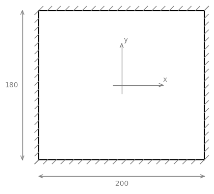
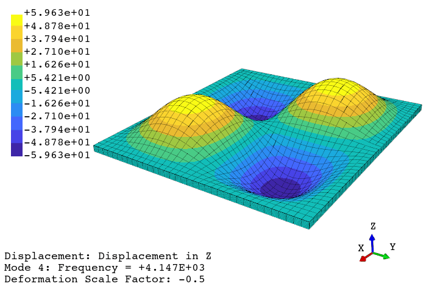
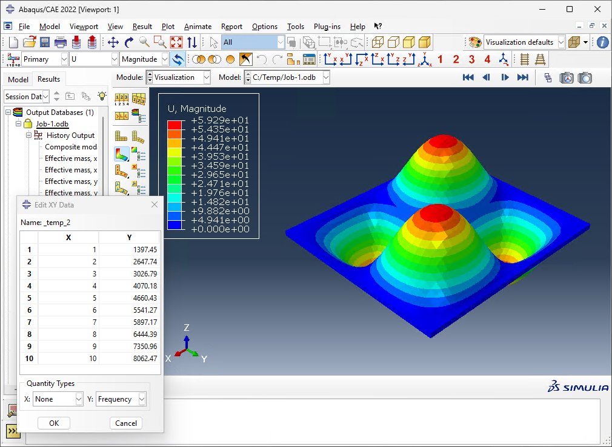

FEAPACK Examples
Basic example #4: Free vibration of a rectangular plate.
Consider the following rectangular plate:
The plate has a length of 200 mm, a width of 180 mm, and a thickness of 5 mm. The plate is fixed/supported on all its sides. The material (steel) is considered elastic, homogeneous, and isotropic, defined by a Young's modulus of 210 GPa, a Poisson's ratio of 0.3, and a density of 7.85 g/cm³. The objective is to perform a frequency (modal) analysis in order to obtain the plate's first 10 normal modes of vibration and corresponding natural frequencies.
Consistent units: below, the geometry will be defined in mm, whereas the Young's modulus is defined in MPa. Additionally, the density is specified in t/mm³. Consequently, displacements are computed in mm and frequencies in Hz (cycles/s).
The FEAPACK files for this example can be found here.
Solution via FEAPACK:
Start by creating a job script named basic4.py and import the modules shown below. In this example, we will run the solver in parallel mode. For multiprocessing, the main guard is required:
import feapack.model
import feapack.solver
# main guard required for multiprocessing
if __name__ == '__main__':
For this example, a finite element mesh has been prepared in basic4.inp:
The basic4.inp file defines 9,102 nodes and 7,200 C3D8 elements. The supported Abaqus element types are automatically converted into the comparable FEAPACK element types (in this case, the C3D8 elements are converted into Volume8 elements). Additionally, Abaqus stores the element connectivity using 1-based indexing, which is automatically converted into 0-based indexing, as required by FEAPACK.
Inside the main guard of the job script, the following code loads the mesh shown above into a new model database (MDB):
# create model database (MDB)
mdb = feapack.model.MDB.fromFile('basic4.inp')
Next, the following node set and element set are created, which are later used to apply the boundary condition and for the section assignments, respectively:
# create sets
mdb.nodeSet(
name='side nodes',
indices=(node.index for node in mdb.mesh.nodes if abs(node.x) == 100.0 or abs(node.y) == 90.0)
)
mdb.elementSet(
name='all elements',
indices=range(mdb.mesh.elementCount)
)
Then, the material and section are defined as follows:
# create material and section
mdb.material(name='steel', young=210000.0, poisson=0.3, density=7.85e-9) # density required for frequency analysis
mdb.section(
name='steel section',
region='all elements',
material='steel',
type=feapack.model.SectionTypes.General, # or simply 'General'
reducedIntegration=False
)
We then define the following boundary condition:
# create boundary condition
mdb.boundaryCondition(name='fixed sides', region='side nodes', u=0.0, v=0.0, w=0.0)
Finally, we call the solver, still within the main guard, while also specifying the requested number of normal modes:
# call solver inside main guard for multiprocessing
# specifying processes > 1 will enable parallel mode
# k0 specifies the requested number of eigenvalues and corresponding eigenvectors
feapack.solver.solve(mdb, analysis='frequency', k0=10, processes=4)
To actually perform the finite element analysis, the following command is used: python basic4.py. The file basic4.out will be generated upon a successful run. Then, the viewer application can be launched using the following command: python -m feapack.viewer.
Animated results generated using the viewer application:
Note: mode shapes are normalized with respect to the mass matrix of the system (as customary).
As a form of validation, here are the results from FEAPACK vs. Abaqus using the comparable C3D8 element:
FEAPACK (Mode 4)
Abaqus (Mode 4)